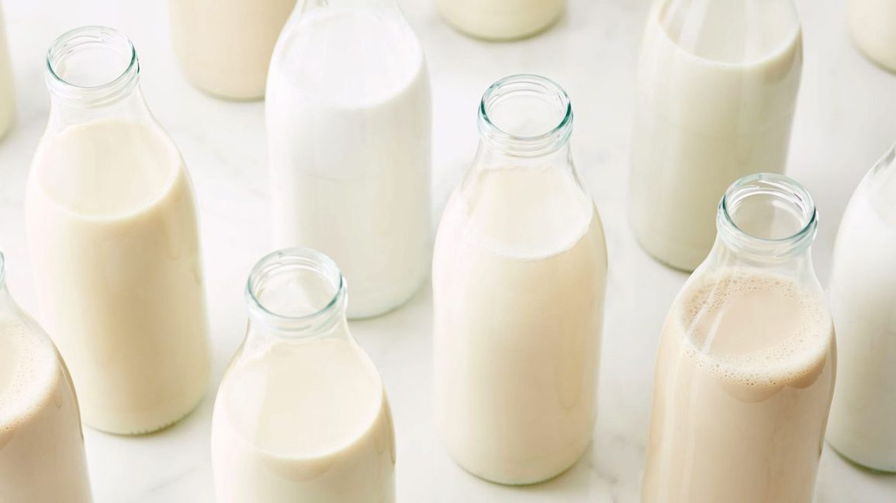
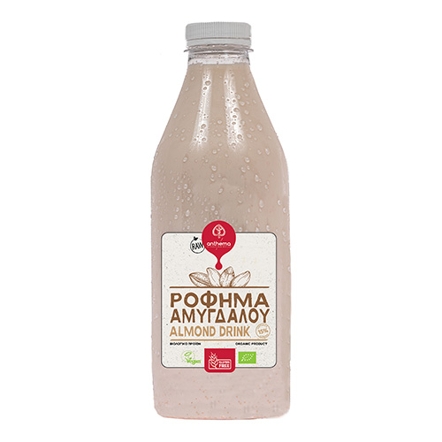
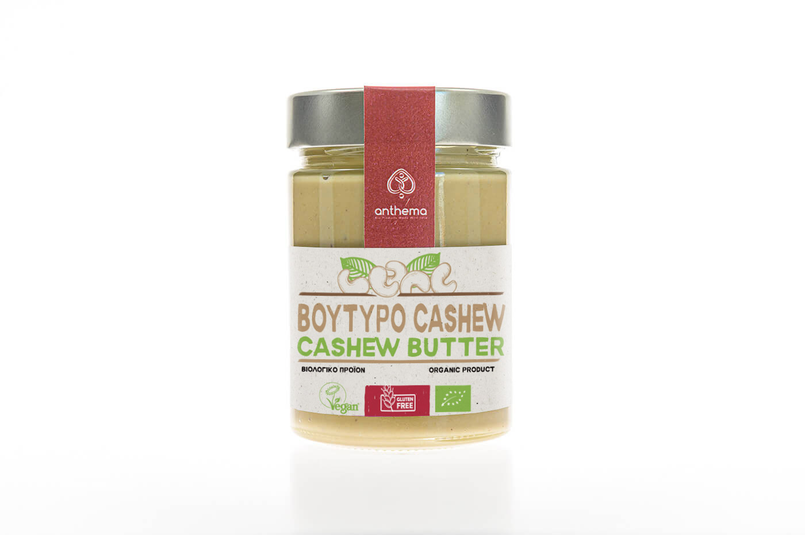

The people responsible for creating The Food Pyramid are themselves working in industries like the dairy and meat industry thus promote their products as healthy!
It is a big marketing scam resembling one of the biggest scams in the food industry by Kellogs- that cereal is a healthy breakfast food.
DAIRY
1.You are not a baby cow! Cow’s milk is produced by nature as the IDEAL FOOD FOR BABY COWS- you are an adult human
Why are you casually drinking cow’s milk and not your cat’s or dog’s milk?
Humans are the ONLY species that drinks milk from another species, plus so long after childhood.
Would you go into nature and suckle from a cow?
2. 75% of the population is lactose intolerant and the majority never diagnose it (the smaller percentage that is not is mostly Caucasians)
3. You are drinking ANTIBIOTICS and GROWTH HORMONES
From the mass production process
4. Milk increases OSTEOPOROSIS and HIP FRACTURES- contrary to the belief that you must drink milk for strong bones.
5. LINKED TO INCREASED RISK FOR MANY CANCERS.
Casein-milk protein increases IGF-1 (which is linked to ovarian, prostate cancer and others)
6. High saturated fats in all dairy (cheese,butter,milk...) increase cholesterol and can lead to HEART DISEASE
Inflammation also =acne



Wheat
1.Has many adverse effects on the gut regardless if you have gluten sensitivity or Coeliac
-Inflammation from Wheat
The proteins in wheat (ATIs) are gut irritants.
-Leaky gut- intestines become permeable, one of the leading factors to autoimmune disease
wheat causes disturbances to microbiome
2.Wheat contains A LOT of sugar- thus consider the bad effects of sugar
3.Neurological effects: Brain fog and fatigue
Patients with brain disorders see a huge improvement when following a gluten-free diet